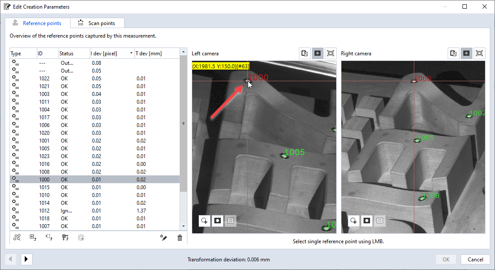

point_pixel_transformations
Short description
This example demonstrates how to find the 2D pixel coordinates of a 3D point coordinate and vice versa.
Highlights
The example uses gom.api.imaging functions. The transformations work with any 3D point, but using a reference point increases the comprehensibility.
Each measurement has two arrays for reference points with matching indices:
measurement.reference_point_id - The reference points’ Ids or ‘None’ for an invalid reference point
measurement.reference_point_coordinate - The reference points’ coordinates
Set the point coordinate
measurement = gom.app.project.measurement_series[MEASUREMENT_SERIES].measurements[MEASUREMENT]
# Using the first valid reference point in the selected measurement as the point example
for index, id in enumerate(measurement.reference_point_id):
if id is not None:
break
reference_point = measurement.reference_point_coordinate[index]
Reference point’s IDs and coordinates

Get the left and right camera image
left = gom.api.project.get_image_acquisition(measurement, 'left camera', [stage_index])[0]
right = gom.api.project.get_image_acquisition(measurement, 'right camera', [stage_index])[0]
Explorer: Measurement — Edit Creation Parameters

Interactive display of pixel coordinates
{kind=link}
Compute 2D pixel coordinates from 3D point
image_coordinates = gom.api.imaging.compute_pixels_from_point ([(reference_point, left), (reference_point, right)])
print(f'\tImage coordinates of reference point (left, right): {image_coordinates}')
Compute 3D point coordinate from 2D pixels
The resulting 2D pixels from the previous step are used as the input parameters to the transformation.
print(f'\tLeft image: {image_coordinates[0]}, Right image: {image_coordinates[1]}')
use_calibration = False
computed_point = gom.api.imaging.compute_point_from_pixels ([[(image_coordinates[0], left), (image_coordinates[1], right)]], use_calibration)
print(f'\tComputation result: P = {computed_point[0][0]}')